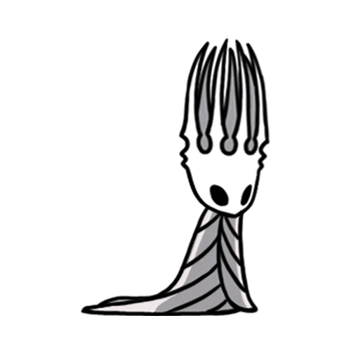
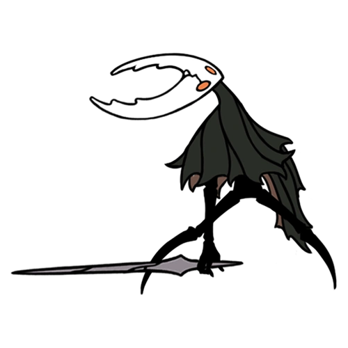
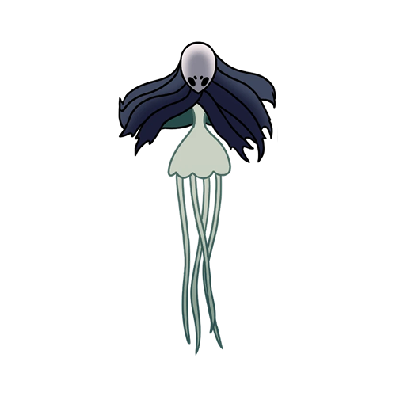
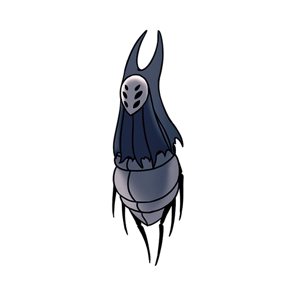
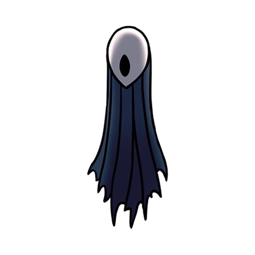
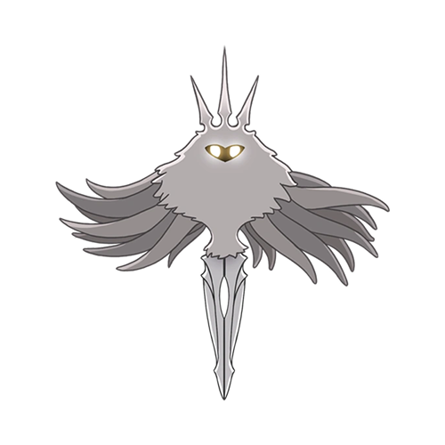

Knight
Para conter um mal que pairava sobre o reino, muitos Receptáculos Vazios foram criados, mas apenas um deles era verdadeiramente vazio. Ele não tinha nenhum diferencial de seus irmãos ou foi treinado e lapidádo por anos para ser um receptáculo perfeito, mas mesmo assim, ele foi o único entre os seus irmãos que se tornou verdadeiramente vazio, se tornando, em partes, o senhor do vazio.
Hornet
Uma princesa nascida em um reino fadádo a cair, atráves de um acordo entre reinos, ela nasceu de um dos observadores e do próprio Rei Pálido, se tornando um dos seres mais poderosos pelo reino, seu nome era Hornet, a filha da tecelã. Hornet ficou vagando pelo reino de Hallownest, tentando resolver os problemas deixados por conta do mal, mas ela apenas conseguiu concluir seu objetivo, após um misterioso receptáculo completamente vazio a auxiliar.
Rei Pálido
Durante muitos anos, o reino de Hallownest era lar apenas de insetos violentos e pura selvageria, mas tudo mudou, quando um Wyrm, um ser visto como divindade por muitos, de vasta alma e grande poder e tamanho, cavou seu próprio tumulo no reino, mas, uma prática comum dos Wyrm e reviverem de suas cascas, e foi exatamente isso que aconteceu. Após sua morte, um ser, muito menor que seu corpo original, saiu de sua boca, um ser pequeno, mas com todo o poder de seu antigo receptáculo comprimido nele. Ao pisar no reino, os insetos que ali viviam, se tornaram consciêntes no mesmo instante, e assim, começou um reino de um Rei Pálido, que viria a cair futuramente. Ele avançou e travou batalhas, unificando cada ponta do reino e fazendo com que todos do reino venerassem apenas ele, e mais nenhum Deus, e isso foi a causa principal de sua ruina.
Hollow Knight
O primeiro Receptáculo Vazio que conseguiu sair da Bacia Antiga, acompanhado do Rei Pálido, seu destino já selado, ele tinha apenas um propósito, selar o maior mal que tomava Hallownest, o Rei arquitetou a existência de diversos seres vazios, sabendo que poucos de fato, se tornariam vazios e consciêntes, e ele foi o primeiro, o conhecido por Hollow Knight. Ele treinou no Palácio Branco durante toda sua vida, ganhando um alto status no reino, e finalmente, depois de planejamentos meticulosos feitos por várias partes, ele tinha que cumprir o seu papel, se servir como um receptáculo para selar o mal, mas, mesmo que o plano tenha sido perfeito, apenas um problema inesperado acabou na ruina do reino, o receptáculo vazio, acabou não se tornando tão vazio, já que agora, ele tinha afeição com alguem que ele tinha como figura paterna, o próprio Rei Pálido, sendo essa a única e maior falha no plano.
Monomon, a Professora
Durante toda a jornada do Rei, ela sempre foi uma guia para ele. Buscando sempre aprender mais e mais sobre tudo que tinha nesse vasto mundo, e conseguindo a resposta para perguntas antes impossíveis, ela montou o plano para conter o mal do reino e apontou uma solução, no final ainda foi escolhida para ser uma das 3 sonhadoras, que seriam essências para o sucesso do plano.
Harrah, a Besta
Uma criatura que vivia em locais escuros, apenas se importando com seu reino, mas desesperada por uma filha para continuar sua linhagem. Ela e o Rei Pálido travaram diversas batalhas, com nenhum lado saindo de fato um vencedor. Após um trato feito pelo rei, ela se aliaria a ele como uma das sonhadoras, contanto que o rei e ela tivessem uma filha para continuar sua linhagem, e assim foi feito.
Luriem, o Observador
Um observador fiel ao seu rei até o fim, nunca discordando e sempre o auxiliando, tomando conta de tudo em sua principal cidade, quando o mal caiu sobre o reino, ele continuou seguindo o rei fielmente e auxiliando-o em tudo e qualquer atividade, e quando a hora do grande plano chegou, ele foi o primeiro a ser escolhido pelo rei para ser um sonhador, sendo o mais fiel ao rei em todo o reino.
Radiância Absoluta
Um suposto mal, que foi capaz de derrubar um reino inteiro com sua ira, mesmo que esse reino fosse governado por outra divindade. A Radiância é considerada por todos do reino como um mal que precisava ser extindo, mas não foi bem assim, ela é a segunda divindade mais antiga que se tem conhecimento até o momento, sendo apenas menos antiga que o Deus do Vazio, A Radiância vivia tranquila e presava a paz com suas filhas mariposas, já que ela não podia exercer seu poder no mundo físico, ela precisava de seguidores para isso. Muitos anos se passaram com ela apenas exercendo esse pouco controle do mundo, até que o Rei Pálido decidiu tentar sela-la para sempre, fazendo com que suas filhas a esquecessem e desaparecendo com ela durante eras. Mas depois de um pequeno erro, pessoas acabaram vendo uma estátua a muito tempo esquecida de sua forma, e mesmo que fosse algo simples e por pouco tempo, já foi o suficiente para A Radiância retornar e de pouco a pouco infectar a mente de diversas pessoas no reino, com o propósito de destruir tudo daquele que tenou sela-la.